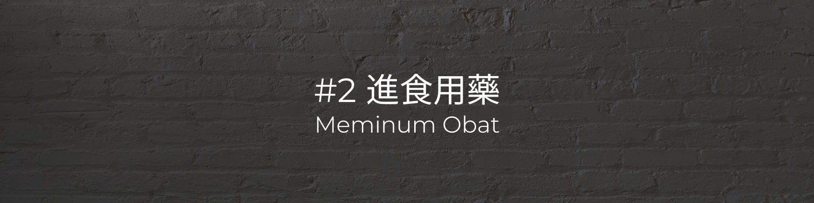

鼻胃管每日照護
Perawatan harian tabung nasogastrik- 使用中型棉籤沾水，旋轉清潔鼻孔，一邊鼻孔用一支棉籤
Gunakan kapas berukuran sedang dengan air dan aduk untuk membersihkan lubang hidung, dengan satu kapas di setiap lubang hidung. - 清潔已插入鼻胃管的鼻孔時，可先撕除鼻胃管膠布
Saat membersihkan lubang hidung tempat selang nasogastrik telah dimasukkan, pita selang nasogastrik dapat dilepas terlebih dahulu - 注意鼻胃管刻度，清潔時避免挪動鼻胃管深度
Perhatikan skala selang nasogastrik, dan hindari memindahkan kedalaman selang nasogastrik saat membersihkan - 清潔後將鼻胃管輕微旋轉，避免管子沾黏鼻孔
Putar selang nasogastrik sedikit setelah dibersihkan untuk menghindari selang menempel pada lubang hidung - 膠布直向剪開，貼在不同的位置，以旋繞方式固定鼻胃管
Pita perekat dipotong lurus dan ditempelkan pada posisi yang berbeda untuk memperbaiki tabung nasogastrik secara spiral - 檢查口腔，確認口腔內無管路
Periksa mulut untuk memastikan tidak ada tabung di mulut - 灌入30～50ml 溫開水，確定管路順暢、溼潤鼻胃管，避免食物黏附管壁
Tuangkan 30-50ml air matang hangat untuk memastikan saluran pipa halus dan basahi selang nasogastrik untuk mencegah makanan menempel di dinding tabung - 鼻胃管灌食
Pemberian Makan Paksa Tabung Nasogastrik - 先反抽胃內容物，確認不為墨綠色、暗紅色、咖啡色，且不超過 200c.c.，確認正常後應灌回胃部
(若超過 200c.c.，應等待一小時後再次確認。若呈現上述顏色則不要灌回，並應通報醫護人員)
Pompa kembali isi perut terlebih dahulu, dan pastikan tidak hijau tua, merah tua, atau coklat, dan tidak melebihi 200c.c. Setelah dipastikan normal, harus dituangkan kembali ke dalam perut (Jika melebihi 200c.c., tunggu satu jam lalu konfirmasi lagi. Jika muncul warna di atas, jangan tuangkan kembali, dan beri tahu staf medis) - 將灌食空針內管取出，反折胃管、打開開口、接上空針、倒入牛奶
Keluarkan ban dalam dari jarum yang kosong untuk dicekok, lipat kembali tabung lambung, buka lubangnya, sambungkan jarum yang kosong, dan tuangkan susu - 將針筒舉高離身體約 30~45 公分，讓牛奶緩慢流入，並且應避免空氣進入
Angkat jarum suntik sekitar 30 ~ 45 cm dari tubuh, biarkan susu mengalir perlahan, dan hindari masuknya udara - 牛奶即將流完時，再次反折管子並加入牛奶 (重複此步驟直到灌食完畢)
Saat susu hampir habis, balikkan tabung lagi dan tambahkan susu (ulangi langkah ini sampai pemberian makan paksa selesai) - 牛奶灌食完畢 (不超過 350c.c.)，倒入 20~30c.c.溫開水
Setelah pemaksaan susu (tidak lebih dari 350c.c.), tuangkan 20~30c.c. air hangat - 灌食後1小時才能下床，此期間應避免拍痰、翻身，避免嘔吐
Satu jam setelah mencekok paksa makan, Anda bisa bangun dari tempat tidur Selama periode ini, Anda harus menghindari meludah, membalik, dan muntah - 灌食後，應洗手並清洗灌食針筒的管壁
Setelah mencekok makan, cuci tangan Anda dan bersihkan dinding selang alat suntik pemaksa
{kind=link}